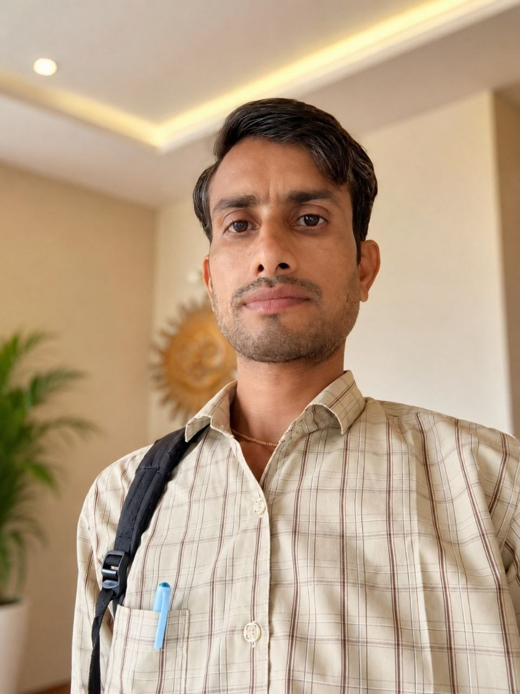

Cyber Crime Analyst
Studying cybercrime patterns, digital threats and evolving online risk environments.
A multidisciplinary professional identity built around cyber intelligence, digital investigations, artificial intelligence, technology, journalism and healthcare.

Founder & CEO, MK Global Nexus
I am Manoj Meena , Founder & CEO of MK Global Nexus , with a professional focus spanning cyber crime analysis, digital fraud investigation, OSINT, artificial intelligence, cybersecurity, investigative journalism and healthcare.
My professional work is centered around understanding digital threats, analyzing online fraud ecosystems, researching publicly available information and exploring responsible applications of emerging technologies.
I believe that technology becomes more valuable when it is combined with investigation, critical thinking, verification and public awareness.
This philosophy is also reflected in MK Global Nexus — an ecosystem focused on cyber intelligence, digital research, technology innovation and awareness.
Research deeply. Verify information. Build responsibly. Create meaningful impact.
Studying cybercrime patterns, digital threats and evolving online risk environments.
Researching digital fraud, scam methodologies and suspicious online activity.
Exploring practical applications of artificial intelligence, automation and cybersecurity.
Researching technology-related issues and communicating information with context.
Maintaining healthcare knowledge as an important part of a multidisciplinary professional identity.
Building MK Global Nexus as a professional technology and intelligence ecosystem.
My long-term vision is to combine intelligence, technology and public awareness to help people better understand the digital world and its risks.
Gather information from relevant and publicly available sources.
Identify patterns, relationships and meaningful signals.
Cross-check information before communicating important findings.
Turn research and knowledge into practical technology and awareness.
Explore the technology and intelligence ecosystem being developed under MK Global Nexus.